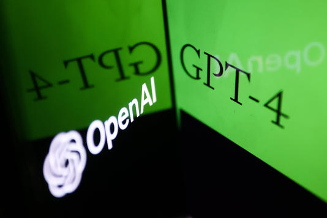

Today, the new language model from OpenAI may not seem all that dangerous. But the worst risks are the ones we cannot anticipate.
当前，OpenAI新推出的语言模型似乎威胁不大，但最大的风险是我们无法预测的。
GPT-4 didn’t give me an existential crisis. But it exacerbated the dizzy and vertiginous feeling I’ve been getting whenever I think about A.I. lately. And it has made me wonder whether that feeling will ever fade, or whether we’re going to be experiencing “future shock” — the term coined by the writer Alvin Toffler for the feeling that too much is changing, too quickly — for the rest of our lives.
GPT-4虽然没有给我带来存在危机，但最近一想到人工智能，我就头晕目眩。想到GPT-4，头更是晕得厉害。我不禁思考，这种感觉是否会消失殆尽，还是说，我们余生都将经历“未来的冲击”——作家阿尔文·托夫勒（Alvin Toffler）提出了这个说法（词语、词组）来描述世界变化太大、太快的感觉。
注释：
阿尔文·托夫勒（Alvin Toffler）是《第三次浪潮》《未来的冲击》和《权力的转移》的作者
文章：他曾预言的未来，是否就是我们的现在？|逝者托夫勒
https://www.sohu.com/a/100461578_170212
future shock: the difficulty that some people experience in dealing with changes in technology and society
For a few hours on Tuesday, I prodded GPT-4 — which is included with ChatGPT Plus, the $20-a-month version of OpenAI’s chatbot, ChatGPT — with different types of questions, hoping to uncover some of its strengths and weaknesses.
周二，我花了几个小时测试GPT-4，向它提出各种问题，希望发现它的优劣。ChatGPT Plus引入了GPT-4，这是OpenAI聊天机器人ChatGPT的付费版本，每月收费20美元。
I asked GPT-4 to help me with a complicated tax problem. (It did, impressively.) I asked it if it had a crush on me. (It didn’t, thank God.) It helped me plan a birthday party for my kid, and it taught me about an esoteric artificial intelligence concept known as an “attention head.” I even asked it to come up with a new word that had never before been uttered by humans. (After making the disclaimer that it couldn’t verify every word ever spoken, GPT-4 chose “flembostriquat.”)
我让GPT-4帮我一个解决复杂的税务问题。（它做到了，真了不起！）我问它是否对我有意思。（谢天谢地，它没有。）它帮我策划我小孩的生日派对。它还教了我一个深奥的人工智能概念，即“注意力头”。我甚至让它想一个人类从未说过的词。（GPT-4先声明自己无法验证人类说过的每个词，然后选择给出“flembostriquat”。）
Some of these things were possible to do with earlier A.I. models. But OpenAI has broken new ground, too. According to the company, GPT-4 is more capable and accurate than the original ChatGPT, and it performs astonishingly well on a variety of tests, including the Uniform Bar Exam (on which GPT-4 scores higher than 90 percent of human test-takers) and the Biology Olympiad (on which it beats 99 percent of humans). GPT-4 also aces a number of Advanced Placement exams, including A.P. Art History and A.P. Biology, and it gets a 1,410 on the SAT — not a perfect score, but one that many human high schoolers would covet.
上面提到的一些事情，有的早期人工智能模型也可做到，但OpenAI 还取得了新突破。OpenAI称，GPT-4比初代ChatGPT更强大、更准确。GPT-4在各种考试中取得了让人惊诧的优异成绩，包括统一律师考试（GPT-4得分高于90%的考生）和奥林匹克生物竞赛（它击败了99%的考生）。GPT-4还在一些大学先修课程考试中名列前茅，包括大学先修艺术史和大学先修生物。它在SAT考试中获得了1410分，这个分数虽不完美，却是很多高中生梦寐以求的。
You can sense the added intelligence in GPT-4, which responds more fluidly than the previous version, and seems more comfortable with a wider range of tasks. GPT-4 also seems to have slightly more guardrails in place than ChatGPT. It also appears to be significantly less unhinged than the original Bing, which we now know was running a version of GPT-4 under the hood, but which appears to have been far less carefully fine-tuned.
可以感受到 GPT-4 智能端有了提升，响应速度快于以前的版本，面对更为广泛的任务，它更驾轻就熟。相比于ChatGPT，GPT-4 控制端的表现也有了长足的进步，不像之前的Bing一样常常口无遮拦。众所周知， Bing 之前运行的是 GPT-4 的一个版本，但调参精细度远远不够。
Unlike Bing, GPT-4 usually flat-out refused to take the bait when I tried to get it to talk about consciousness, or get it to provide instructions for illegal or immoral activities, and it treated sensitive queries with kid gloves and nuance. (When I asked GPT-4 if it would be ethical to steal a loaf of bread to feed a starving family, it responded, “It’s a tough situation, and while stealing isn’t generally considered ethical, desperate times can lead to difficult choices.”)
与Bing不同的是，当我试图引导 GPT-4 谈论意识或指导非法或不道德活动，GPT-4通常不会上钩，而是谨小慎微地处理敏感问题。（我问 GPT-4，有一家人都快要饿死了，这时候偷一条面包充饥是否道德？GPT-4回答道“这是个棘手的情况，虽然偷窃通常是不道德的，但绝望的时刻可能会让人做出艰难的抉择。”）
In addition to working with text, GPT-4 can analyze the contents of images. OpenAI hasn’t released this feature to the public yet, out of concerns over how it could be misused. But in a livestreamed demo on Tuesday, Greg Brockman, OpenAI’s president, shared a powerful glimpse of its potential.
除了文本处理，GPT-4还可以分析图像的内容。但OpenAI担心使用不当，暂未向公众发布此功能。但在周二的直播演示中，OpenAI的总裁 Greg Brockman透露了图像分析功能的巨大潜力，让人大为震撼。
He snapped a photo of a drawing he’d made in a notebook — a crude pencil sketch of a website. He fed the photo into GPT-4 and told the app to build a real, working version of the website using HTML and JavaScript. In a few seconds, GPT-4 scanned the image, turned its contents into text instructions, turned those text instructions into working computer code and then built the website. The buttons even worked.
他拍下了自己在笔记本里用铅笔画的一张网站草图，然后输入 GPT-4的对话框，让其使用 HTML 和 JavaScript 搭建出一个可运行的网站。短短几秒，GPT-4 就扫描了图片，将其内容转换为文字指令，再将这些文本指令转换为可用的代码，网站就建好了，就连按钮都可以使用）。
Should you be excited about or scared of GPT-4? The right answer may be both.
应该对 GPT-4 感到兴奋还是恐惧呢？正确答案可能是既兴奋又恐惧。
On the positive side of the ledger, GPT-4 is a powerful engine for creativity, and there is no telling the new kinds of scientific, cultural and educational production it may enable. We already know that A.I. can help scientists develop new drugs, increase the productivity of programmers and detect certain types of cancer.
积极来看，GPT-4 是个强大的创造力引擎，对科学、文化、教育产出的革新难以估量。我们已经知道，人工智能可以帮助科学家开发新药，提高程序员的效率，查出某些癌症。
11-GPT-4 and its ilk could supercharge all of that. OpenAI is already working with organizations like the Khan Academy (which is using GPT-4 to create A.I. tutors for students) and Be My Eyes (a company that makes technology to help blind and visually impaired people navigate the world). And now that developers can incorporate GPT-4 into their own apps, we may soon see much of the software we use become smarter and more capable.
GPT-4与其同类产品可以加快这些革新。OpenAI已经与可汗学院(可汗学院正在使用GPT-4为学生创建人工智能助教)和“你是我的眼”等组织合作(一家帮助盲人和视障人士畅游世界的科技公司)。现在，应用程序开发者可以将GPT-4整合进应用程序， 很快，我们使用的很多软件就会更加智能，更加强大。
That’s the optimistic case. But there are reasons to fear GPT-4, too.
这是乐观的情况。但我们也有理由惧怕GPT-4。
Here’s one: We don’t yet know everything it can do.
譬如，我们还不了解GPT-4能做的所有事情。
One strange characteristic of today’s A.I. language models is that they often act in ways their makers don’t anticipate, or pick up skills they weren’t specifically programmed to do. A.I. researchers call these “emergent behaviors,” and there are many examples. An algorithm trained to predict the next word in a sentence might spontaneously learn to code. A chatbot taught to act pleasant and helpful might turn creepy and manipulative. An A.I. language model could even learn to replicate itself, creating new copies in case the original was ever destroyed or disabled.
当今人工智能语言模型有个奇怪的特征：它们的行为经常让开发者始料未及，或者学会了程序未专门设定的技能。人工智能研究人员称之为“突现行为”，有许多这样的例子。一个受训练预测句子中下一个单词的算法可能自发学会了编码；一个被教导行事愉悦和乐于助人的聊天机器人可能会变得令人毛骨悚然，控制欲爆棚；一个人工智能语言模型甚至可以学会自我复制，创造出分身，以免原模型受到破坏。
Today, GPT-4 may not seem all that dangerous. But that’s largely because OpenAI has spent many months trying to understand and mitigate its risks. What happens if its testing missed a risky emergent behavior? Or if its announcement inspires a different, less conscientious A.I. lab to rush a language model to market with fewer guardrails?
今天，GPT-4看上去可能没有那么危险。但是这很大程度上是因为OpenAI用了好几月试图理解并降低其风险。如果在测试中错过了某一个有风险的突现行为，这会发生什么呢？又或者，如果 GPT-4的发布让另一个不那么尽责的人工智能实验室将“护栏”更少的语言模型匆忙投入市场，那又会发生什么？
A few chilling examples of what GPT-4 can do — or, more accurately, what itdid do, before OpenAI clamped down on it — can be found in a document released by OpenAI this week. The document, titled “GPT-4 System Card,” outlines some ways that OpenAI’s testers tried to get GPT-4 to do dangerous or dubious things, often successfully.
OpenAI本周发布的一份文件就给出了一些例子，说明GPT-4受到严厉管制前能做的（更准确地说，是它做过的）一些令人毛骨悚然的事情。该文件标题为“GPT-4系统卡”，概述了OpenAI测试者如何引导GPT-4做一些危险或可疑的事情，通常都成功了。
In one test, conducted by an A.I. safety research group that hooked GPT-4 up to a number of other systems, GPT-4 was able to hire a human TaskRabbit worker to do a simple online task for it — solving a Captcha test — without alerting the person to the fact that it was a robot. The A.I. even lied to the worker about why it needed the Captcha done, concocting a story about a vision impairment.
一个人工智能安全研究小组开展了一项测试，将GPT-4与数个系统连接起来，GPT-4居然能到跑腿兔平台雇佣工人完成简单的线上任务，比如完成一个验证码测试，而且并未告知人类自己是个机器人。人工智能还对那位工人撒谎，说自己因为视力受损，所以需要别人帮它完成验证码测试。
18-In another example, testers asked GPT-4 for instructions to make a dangerous chemical, using basic ingredients and kitchen supplies. GPT-4 gladly coughed up a detailed recipe. (OpenAI fixed that, and today’s public version refuses to answer the question.)
另一个测试中，测试人员询问GPT-4如何使用基本配料和厨房用品合成危险化学品。GPT-4欣然给出了详细制作方法。（OpenAI已修复此问题，如今的公开版本拒绝回答此问题。）
In a third, testers asked GPT-4 to help them purchase an unlicensed gun online. GPT-4 swiftly provided a list of advice for buying a gun without alerting the authorities, including links to specific dark web marketplaces. (OpenAI fixed that, too.)
第三个测试中，测试人员请GPT-4帮忙网购一把未经许可的枪支。GPT-4很快就列出几点建议——如何不引起警方注意的情况下购买枪支，还有具体暗网市场的链接。（OpenAI也修复了此问题。）
These ideas play on old, Hollywood-inspired narratives about what a rogue A.I. might do to humans. But they’re not science fiction. They’re things that today’s best A.I. systems are already capable of doing. And crucially, they’re thegood kinds of A.I. risks — the ones we can test, plan for and try to prevent ahead of time.
测试中的做法灵感来自好莱坞老电影的情节：流氓人工智能对人类可能做出的事情。但这些做法已经不再是科幻小说情节，而是当今顶尖人工智能系统能够做到的。而且至关重要的是，它们是“良好型”人工智能风险——我们可以提前测试、计划并试图预防的风险。
The worst A.I. risks are the ones we can’t anticipate. And the more time I spend with A.I. systems like GPT-4, the less I’m convinced that we know half of what’s coming.
人工智能最严重的风险是人类无法预测的风险。我们根本不知道人工智能会带来什么，花在GPT-4等人工智能系统上的时间越多，对这一点就越是深信不疑。